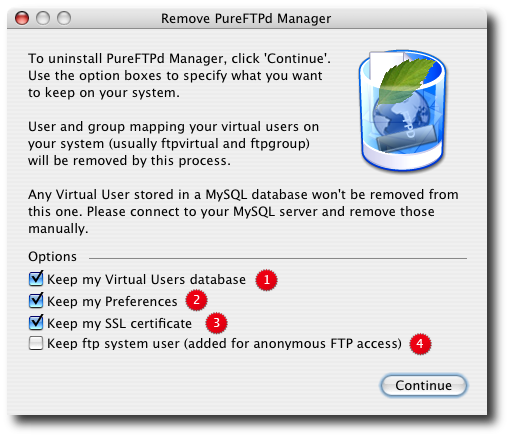

Uninstall PureFTPd ManagerWhen you feel like you want to get rid of PureFTPd Manager and restore your system to its inital state before it was modified by my software, you can use the bundled application uninstaller. You can access it click on the corresponding menu items in PureFTPd Manager menu. Be sure to turn off your FTP server before starting the process. The following screenshot help you understand the options provided.

1. Prevent the uninstaller from deleting your virtual users's database 2. Do not remove your pure-ftpd and PureFTPd Manager preferences from your system 3. Do not delete your SSL certificate if you created one 4. Keep the ftp system account on your computer. If you want to fully uninstall PureFTPd manager, do not check any box. Keep what you seems like important to you by checking the corresponding boxes otherwise.Click the Continue button to complete the process. When it is done, the default Mac OS X FTP server is restore.
See you next time !
|